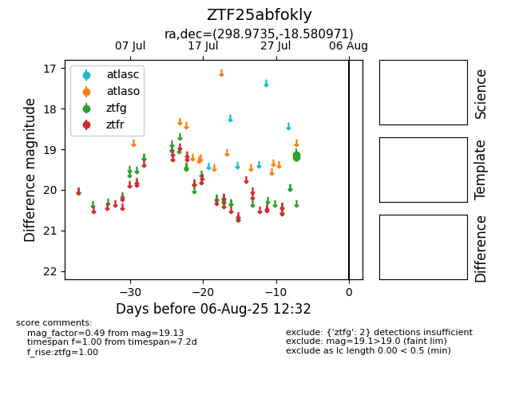

Target ZTF25abfokly at 2025-08-06 17:45, see:
FINK: fink-portal.org/ZTF25abfokly
Lasair: lasair-ztf.lsst.ac.uk/objects/ZTF25abfokly
ALeRCE: alerce.online/object/ZTF25abfokly
alt names
ZTF25abfokly (ztf,fink)
coordinates:
equatorial (ra, dec) = (298.9735,-18.58097)
galactic (l, b) = (22.7454,-22.29882)
photometry
last ztfg=19.13
2 ztfg detections
